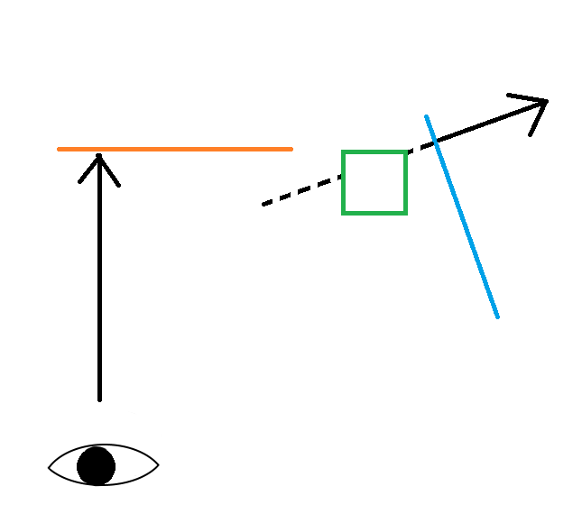

Introduction
This project is the final coursework of the year 2 module - Computer Graphics. The coursework required researching and implementing graphical effects or features that are outside of the normal course material. The main feature chosen in this project is the portal effect, achieved using multi-pass rendering and a stencil buffer.
The portals
The effect used to create the portals is achieved by first rendering the scene without the portals, then rendering the shape of the portals (represented in the scene by two ovals) into the stencil buffer, and finally rendering the scene two additional times with modified transforms, once for each portal onto the areas marked by the stencil buffer.
The stencil buffer is similar to other buffers used in the graphics pipeline, but instead of storing colour values or floats for depth information it stores integers. This makes the stencil buffer useful for marking areas of the screen. In the case of the portals, the stencil buffer is initialized with zeros, then the first portals is 'drawn' into the buffer as ones and the second as twos.
The image drawn on the area marked for the portals has to match the perspective of the camera as if it was placed at the same angle and distance to the other portal. This is done by multiplying the transform matrices of the scene with the transform of one portal and the inverse of the other, the doing the opposite to render the other portal. The camera has to also ignore any objects and any parts of objects that are in front of the other portal. This is done in the fragment shader and the fragments that are determined to be in front of the portal are discarded.
The resulting image should be drawn according to the diagram below:
Result
The resulting scene achieves the desired effect of simulating the visual of portals. Additionally a colour correction post-processing effect is used, and some optimization is done to the code. The colour correction is done by switching to a different colour system changing the colour values and switching back. This post-processing effect can be used to change the way the scene is coloured during runtime. The optimization mainly focuses on reducing the number of OpenGL context switches.